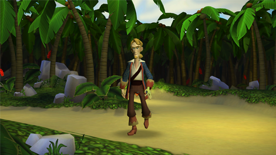

8 |
So wird gespielt |
 |

Du kannst Guybrush entweder mit einer Kombination aus der Wii-Fernbedienung und dem Control Stick des Nunchuks oder nur mit der Wii-Fernbedienung steuern. Auf der Wii-Fernbedienung kannst du entweder das Steuerkreuz verwenden oder den A-Knopf gedrückt halten und den Zeiger in die Richtung ziehen, in die du dich bewegen möchtest. Um zu rennen, hältst du den Z-Knopf gedrückt und steuerst das Nunchuk oder du hältst den B-Knopf gedrückt, wenn du nur die Wii-Fernbedienung verwendest. In besonderen Fällen ist es notwendig, dass du das Steuerkreuz für Bewegungen verwendest. Während du in DeSinges Labor auf der Trage festgeschnallt bist, musst du das Steuerkreuz verwenden, um sie zu bewegen. Um mit Dingen und Personen der Spielwelt zu interagieren, zeigst du mit der Wii-Fernbedienung auf sie und drückst dann den A-Knopf. Du kannst mit fast allem interagieren, was in der Spielwelt wählbar ist. |
 |
 |
 |